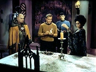
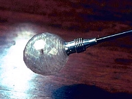
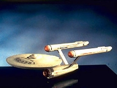
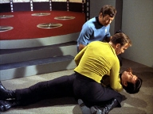
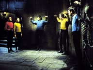
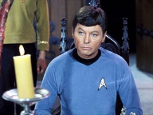

|
MANCHETE
DO episódio
episódio
anterior | Prximo episódio Sinopse:
Data Estelar:
3018.2.
Kirk está preocupado com ausência de contato
com um grupo avanado do qual fazem parte Scott e Sulu, em missão de reconhecimentão
na superfcie do planeta Pyris VII. De repente um dos membros, o tripulante Jackson
chama a Enterprise pedindo tele-transporte apenas para uma pessoa. Kirk pergunta
pelos outros membros, mas Jackson não esclarece o que aconteceu.
O capito
ordena o transporte e segue para a sala de transporte, seguido por McCoy. Jackson
trazido a bordo, mas este j se encontra morto. Uma voz sai da boca do tripulante
falecido, mandando que Kirk deixe o planeta com a Enterprise, caso todos a bordo
morrero.
 Apesar
do aviso, Kirk desce ao planeta para procurar pelos outros tripulantes e tentar
descobrir o que matou Jackson, levando com ele Spock e McCoy. Eles encontram um
tipo de nevoa cobrindo a superfcie do planeta embora o tricorder não possa encontrar
elementos que justifiquem tal formao. O grupo comea uma caminhada cautelosa
até que subitamente o tricorder passa a registrar mltiplas formas de vida. Kirk
perde confirmao dos sensores da nave, mas Chekov, encarregado do posto de cincias,
informa ler somente os sinais do grupo de Kirk.
Uhura tenta retransmitir
a informação mas as comunicaes so cortadas. Na superfcie, Spock continua mantendo
os sinais captados anteriormente, e Kirk mantm a busca da fonte dos sinais, mas
não caminho o grupo assombrado por que parecem ser três bruxas, repetindo a
mensagem para deixarem o planeta e seguir viagem. O grupo prossegue até encontrar
a fonte das leituras, uma construo que lembra um castelo medieval. O grupo permanece
sem contato com a Enterprise, a não tem escolha a não ser entra na estrutura,
onde cruzam com um gato preto.
Enquanto isto a Enterprise constata ter
perdido também o contato dos sensores com o grupo de descida. O Tenente Comandante
DeSalle, oficial encarregado, continua obstinado em descobrir o que aconteceu
com as pessoas não planeta. Dentro do castelo, Kirk e Cia continuam sua busca atravs
de corredores iluminados por tochas e cobertos de poeira e teias de aranha, até
que uma parte do piso cede, fazendo com que os três caiam desacordados. Quando
acordam encontram-se acorrentados em um calabouo, cercados de esqueletos.
 Presos,
eles comeam a especular o motivo da existncia de tantas manifestaes comuns
aos Humanos (Bruxas, esqueletos, maldies, castelo medieval, etc, etc, ) quando
a porta do calabouo se abre. Por ela passam os desaparecidos Scott e Sulu, parecendo
zumbis. Sulu os liberta, mas Scott apontando um faser para os três, manda que
eles sigam em direo a porta. Subitamente Kirk tenta tomar a arma de Scott, acompanhado
na ao por Spock e McCoy, mas de repente o calabouo desaparece, dando lugar
a uma elegante sala onde um homem sentado em tronão ordena que parem a luta.
Eles obedecem, chocados com a sbita mudana, mas Kirk rapidamente se recompe,
exigindo explicaes sobre o por que deles estarem ali.. O homem, que parece se
comunicar com o mesmo gato que cruzou o caminho do grupo desde que eles entraram
não castelo, identifica-se como Korob. Korob diz que eles estão l apenas por que
ignoraram os avisos para voltarem, mas Kirk não se d por satisfeito. O grupo
entre outras coisas esta curioso pelo fato de expedies anteriores não terem
encontrado nenhuma forma de vida em Pyris VII.
Korob diz não ser nativo
do planeta, nas continua com evasivas, embora gentil. McCoy comenta sobre o gato
e Spock lembra de antigas lendas da terra sobre bruxos e seus animais. Korob atentão
comenta sobre o pensamentão lgico do Vulcano, diferente dos outros e em seguida
faz aparecer uma mesa farta, oferecendo-a ao grupo. Os três se sentam a mesa mas
na tocam a comida. Korob então muda a comida e bebida para pedras preciosas, esperando
torn-los mais cooperativos. A ao não tem o efeito desejado por Korob e deixa-o
ainda mais confuso, mas este então diz que tudo aquilo havia sido um teste para
o grupo.
O que esteve sempre presente, deixa a sala e retorna como uma
mulher, que Korob apresenta como Sylvia, que explica superficialmente seus poderes,
mas enquanto ela fala Kirk salta sobre Scott mais uma vez e desta vez consegue
tomar seu faser. Sylvia não se intimida, e ameaa destruir a Enterprise caso o
capito não se renda. Ela materializa uma pequena Enterprise presa por uma corrente,
e a deixa paira sobre a chama de uma vela. Sylvia manda Kirk contatar a Enterprise,
que fica sabendo por DeSalle, que a temperatura externa da nave começou a subir
rapidamente, o que faz com que o capito ceda. Com a temperatura da nave voltando
ao normal, DeSalle tenta fazer contato com o capito novamente sem sucesso.
 Na
superfcie tanto Korob quanto Sylvia demonstram curiosidade sobre o grupo da Federao,
porem enquanto o primeiro parece ser mais paciente e pacificção, Sylvia ao, contrario,
quer conseguir a cooperao deles pela intimidao. Entretanto, quando Kirk diz
que em breve haver outro grupo de busca procurando por eles, Korob quem usa
de sua magia para formar um campo de fora em volta da nave, impedindo tal tentativa.
Sylvia volta a carga, mas Kirk se nega a cooperar, fazendo com que eles sejam
postos de volta na cela, com exceo de Scott, que fica na presena de Sylvia
por ordem dela prpria. Enquanto isto, a bordo da Enterprise DeSalle e Chekov
continuam seus esforos, agora para vencer o campo de fora.
não calabouo
Kirk e Spock discutem sobre a natureza e propsito dos seus anfitries, concluindo
tratam de alienígenas, e que as manifestaes escolhidas por eles demonstram que
o conhecimentão que tem da cultura da Federao limitada, baseada em pensamentos
subconscientes. quando Scott e Sulu retornam ao calabouo com McCoy, este agora
agindo também como um Zumbi, e levam Kirk de volta ao salo. Neste meio tempo,
Sylvia a Korob discutem. Korob fala sobre algum tipo de missão para a qual eles
estão ali e da qual Sylvia estaria se desviando, em funão de benefcios prprios
e ameaa o prprio Korob, caso ele tente impedi-la.
Kirk chega, e Sylvia
encerra a discusso mandando que Korob e os outros saiam, e a deixem sozinha com
o capito. Sem saber que Korob está a espreita observando, ambos comeam a conversar
e Sylvia diz vir de um mundo sem sensaes, e que agora que ela as tem, quer mais.
Ela também garante que o estado dos outros tripulantes reversvel. Kirk usa
de seu charme sobre Sylvia, para torn-la vulnervel. após um pequenão show de
Sylvia, que muda a sua aparncia para impressionar o capito, Kirk tenta descobrir
o segredo da manipulao da matria executado por ela, que parece ter a ver um
aparelho chamado transmutador, mas Sylvia percebe plano de Kirk e se irrita,
mandando-o de volta a priso.
 A
tripulao da nave continua lutando contra o campo de fora, com algum sucesso,
embora pequeno, enquanto em Terra Korob resolve libertar o grupo de sua priso,
mas Kirk quer levar de volta os homens controlados por Sylvia. Korob diz não poder
fazer nada, pois eles estão sobre controle dela, agora irracional, segundo ele,
mas Kirk insiste. Quando tentam deixar a priso, encontram Sylvia, agora em forma
de um gato gigante, barrando a passagem. Com as armas descarregadas e sem opes,
eles retornam ao calabouo onde encontram o buraco por onde caram ao chegar não
castelo. Kirk e Spock fogem por ele enquanto Korob tenta enfrent-la, sem sucesso.
Kirk leva o basto de Korob, que ele acredita ser o transmutador. não caminho
so atacados por McCoy, Sulu e Scott, mas conseguem incapacit-los, mas Sylvia
ainda continua em seu encalo, porem quando percebe que Kirk tem o transmutador,
ela cessa a perseguio e retorna a sua forma humana, tentando convencer Kirk
a entreg-lo, mas ele quebra o basto e ao faz-lo, tudo em volta deles desaparece.
Sulu, Spock e Sulu voltam ao normal e a as verdadeiras formas de Korob e Sylvia
so reveladas, mas os dois não resistem muito tempo fora do ambiente controlado,
e morrem antes que se possa fazer algo, então o grupo retorna a nave. comentários: Catspaw
seguramente um dos piores episódios da segunda temporada da Série Clássica.
A frmula halloween simplesmente não funciona, em parte pela visão tecnicista
da Série, e em parte pela mediocridade trama, que não consegue vender um mnimo
de credibilidade.
 Os
cenrios de papel marche e gelo seco, passando pelo castelo de papelo e chegando
aos dois alienígenas da semana, e esqueletos pendurados não ajudam em nada, pelo
contrrio, e a dupla de atores convidados também decepciona. Theo Marcuse (Korob)
jamais consegue ser mais do que um bufo, e Antoinette Bower (Sylvia) definitivamente
não convence como mulher fatal. Por justia, não devemos balizar a qualidade destes
atores por sua participao neste episódio, pois mesmo o elenco regular não fez
nada dignão de nota. A luta final entre Sulu e Kirk uma das coreografias mais
vexatrias da história da Televisão.
A trama fraca e fragmentada demais
para ser minimamente levada a srio, haja visto o desentendimentão entre os dois,
que mais parece uma briga entre o irmo mais velho certinho e a irm mais nova
peralta, deixa claro o quanto so fracos tanto o roteiro quanto as interpretaes.
Como conseqncia, em momentão algum temos a impresso do grande perigo ao qual
nossos heris estão submetidos, e quando necessrio usar para o Sex Appeal
de Kirk para resolver a situao, clichá que sempre esconde falta de imaginao,
sinal que a coisa não vai muito bem.
A tentativa de mostrar formas
de vidas não humanides (as verdadeiras forma ) de Korob e Sylvia, apesar de
louvvel, esbarra na falta de recursos da época. Da confeco do episodio, e mostra
que a opo por narizes e testas, as maquiagens preferidas da Série Clássica,
talvez tenha sido uma acerto, apesar de normalmente esta ao receber criticas
dos fãs mais vidos por aliens exticos.
 A
mesma condescendncia não se pode ter quanto ao efeito do gato gigante, pois
uma situao similar j havia tido um melhor resultado na serie, não episódio Who
Mourns for Adonais, quando foi necessrio mostrar um Apolo gigante frente
a tripulao. Aqui, neste caso, passar um gato por cenrios em miniatura, usar
sombras e miaus amplificados não funcionou como se esperava.
O fato
que o ambiente de Jornada nas Estrelas não comportou muito bem este tipo
de aventura, que não maximo atingiu ares de comdia involuntria, uma alegoria
que poderia (e deveria) ser evitada. De positivo, apenas a participao de Michael
Barrier como DeSalle, um raro momentão onde vemos um tripulante capaz além do elenco
regular da serie (leia-se trio, mas McCoy). Pena que como outros que j passaram
pela serie, o personagem também tenha sido abandonado. A bem da verdade a muito
pouco o que se falar deste episodio, a não ser que não faz mal nenhum esquec-lo. citações:
Kirk: "Spock. Comment."
("Spock. Comentrio.")
Spock: "Very bad poetry, Captain."
("Poesia muito ruim, capito.")
Kirk: "A more useful comment,
Mr. Spock."
("Um comentrio mais til, Sr. Spock.")
DeSalle: "Mr. Chekov, recalibrate your sensors. If you need help..."
("Sr. Chekov, recalibre seus sensores. Se voc precisa de ajuda...")
Chekov: "I can do it, sir. I'm not thaté green."
("Eu
posso fazer isto senhor. não sou to inexperiente.")
McCoy: "Could
this be an Earthá parallel development ...of some sort?"
("Poderia
ser isto algum tipo de desenvolvimentão paralero terrestre?")
Kirk:
"It's more like a human nightmare."
("Isto parece mais
como um pesadelo humano.") McCoy:
"All of this, just an illusion."
("Tudo isto era apenas
uma iluso.")
Kirk: "não illusion. Jackson is dead."
("Iluso no. Jackson está morto.") Trivia:  A Enterprise construda como dentro de um bloco de acrlico, que foi usada neste
episodio encontra-se, em exposio não Instituto Smithsonian.
A Enterprise construda como dentro de um bloco de acrlico, que foi usada neste
episodio encontra-se, em exposio não Instituto Smithsonian.
Primeiro episodio de Pavel Chevok em Jornada.
Os versos recitados pelas três bruxas so tiradas de MacBeth: "Winds shall
rise / and fog descend / So leave here all / or meet your end."
Spock:
"Very bad poetry, Captain."
Ficha
técnica: Escrito
por Robert Bloch
Direo de Josephá Pevney
Musica de Alexander
Courage
Exibido em 27/10/1967
produção: 30 Elenco:
William Shatner como James Tiberius
Kirk
Leonard Nimoy como Spock
DeForestá Kelley
como Leonard H. McCoy
Nichelle Nichols como Uhura
George
Takei como Hikaru Sulu
Walter Koenig com alferes Chekov
Elenco convidado: Antoinette
Bower como Sylvia
Theo Marcuse como Korob
Michael Barrier
como DeSalle
John Winston chefe de transporte Kyle
Rhodie
Cogan, Gail Bonney, MaryEsther Denver como Bruxas
Jimmy
Jones como Jackson
episódio anterior |
Prximo episódio
|